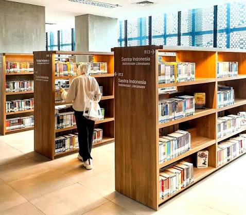

SMK Taruna Jaya Prawira
(THE WINNER)
|
|
SMK Taruna Jaya Prawira |
|
(THE WINNER) |
Profil Sekolah
SMK Taruna Jaya Prawira (TJP) Tuban merupakan salah satu sekolah menengah kejuruan swasta unggulan dan favorit yang terletak diJl. Dr. Wahidin Sudirohusodo, Tuban, Jawa Timur. Sekolah berakreditasi A ini dikenal luas sebagai lembaga pendidikan yang sukses mencetak generasi siap kerja melalui konsepSmart School berbasis teknologi informasi. Guna mempersiapkan tenaga profesional yang mampu diserap langsung oleh Dunia Usaha dan Dunia Industri (DUDI),SMK TJP Tuban menyediakan fasilitas ruang praktik yang sangat memadai serta menyelenggarakan enam program keahlian strategis, yaitu Teknik Pemesinan, Teknik Kendaraan Ringan Otomotif, Teknik Instalasi Tenaga Listrik, Teknik Pengelasan (Kelas Industri), Teknik Komputer dan Jaringan, serta Rekayasa Perangkat Lunak.
Selain fokus pada kesiapan kerja, sekolah yang dipimpin oleh Bapak Bambang Kusdiyanto, ST, M.MPd. ini juga aktif mengukir prestasi gemilang, baik di tingkat regional, nasional, hingga internasional. SMK TJP Tuban tercatat rutin mempertahankan gelar juara dalam Lomba Kompetensi Siswa (LKS) tingkat Provinsi Jawa Timur, bahkan siswanya berhasil menembus LKS Nasional hingga mewakili Indonesia dalam ajang bergengsi seperti World Skills ASEAN Competition . Keberhasilan tersebut membuktikan bahwa dengan pelatihan karakter disiplin ala taruna dan pembekalan rekrutmen kerja yang matang di kelas XII, SMK TJP Tuban berhasil menjadi wadah yang ideal bagi para siswa untuk mengembangkan potensi terbaik mereka di bidang vokasi.
| No | Program Keahlian | Lama belajar |
|---|---|---|
| 1 | Rekayasa Perangkat Lunak | 3 Tahun |
| 2 | Teknik Kompter & Jaringan | 3 Tahun |
| 3 | Teknik Kendaraan Ringan | 3 Tahun |
| 4 | Teknik Instalasi Tenaga Listrik | 3 Tahun |
| 5 | Teknik Pemesinan | 3 Tahun |
| 6 | Teknik Pengelasan | 3 Tahun |
Labolatorium Komputer |
Perpustakaan |
Bengkel Praktik |
 |
 |
Alamat Sekolah : Jl. Dr. Wahidin Sudiro husodo Tuban
Nomor Telepon : (0356) 324379
email sekolah : info@smktjp.sch.id
created by Pradipta Raditya